Continuous Integration¶
Einleitung¶
Dieses Tutorial soll einen Einstieg in die Aspekte
- Versionsverwaltung
- Unit Testing
- Metriken
- Refactoring
- Automatisierte Build
- Continuous Integration
bieten.
Es sind mittlerweile Grundelemente einer jeden (agilen) Softwareentwicklung und füllen den Begriff mit Inhalt.
- Versionsverwaltung
Nicht nur in Teams und verteilten Standorten ist eine Verwaltung des Quellcodes von außerordentlicher Bedeutung. Das Nachvollziehen von Änderungen, das eventuell notwendige Rückgängigmachen von Änderungen gehört heute zu jedem ordentlichen Programmierer dazu. In unserem Beispiel werden wir mit Hilfe der zentralen Softwareverwaltung Subversion die grundlegenden Prinzipien kennenlernen. Dazu gehört z.B. auch
- die Absprache, an welchen Quellcode-Dateien ein Entwickler gerade arbeitet
- das Vermeiden von Konflikten
- Unit Testing
TDD (Test Driven Development) ist eine Vorgehensweise, die die Entwicklung des Programmcodes eng an das Testen des Quellcodes bindet. In einer extremen Sichtweise wird sogar der Test vor dem Schreiben des Quellcodes gelegt. Der Test definiert somit die Spezifikation des Pflichtenheftes.
Unit Testing hat zum Ziel, den Quellcode ständig, wiederholbar und automatisiert zu testen. Jede Änderung im bestehenden Quellcode kann sofort durch einen Test validiert werden; der Entwickler enthält somit ein sofortiges Feedback über seine Änderungen.
Das Tutorial verwendet als Unit-Testing-Tool das Open-Source-Programm NUnit; die Vorgehensweise kann aber leicht an andere Unit-Testing-Frameworks angepasst werden.
- Metriken
Metriken messen bestimmte Eigenschaften von Quellcode, z.B. Lines of Code, Zyklomatische Komplexität, Vererbungstiefe, Kopplungsgrad von Objekten,…
Mit diesen Werten sind anschließend bestimmte Aussagen über die Qualität des Codes möglich. Schlechter Code kann anschließend refaktorisiert werden.
- Refactoring
Bestehender Quellcode ist häufig noch nicht „optimal“. Dies äußert sich z.B. in
- zu langen Methoden
- Lagerung des Quellcodes am falschen Ort
- Nicht-Beachten von allgemein anerkannten Programmierprinzipien
- schlechten Metriken
Refactoring beschreibt Vorgehensweisen, wie man solche „Probleme“ erkennt und behebt. Weiterhin muss natürlich sichergestellt sein, dass nach einem Refactoring der Quellcode immer noch die gleichen Testergebnisse zurückliefert.
- Automatische Builds
Das Erstellen eines Programms bedeutet häufig mehr Arbeitsschritte als das reine Compilieren des Quellcodes. So müssen evtl.
- weitere Compiliervorgänge angestoßen werden
- Tests aufgerufen weren
- Datenbanken durch Skripte angepasst werden,
- Ausgabeordner für das Compilat erstellt werden,
- Setup-Programme aufgerufen werden
- API-Dokumentationen aktualisiert werden.
All diese Dinge könnten auch manuell angestoßen werden. Häufig werden aber diese Aufgaben nicht zeitnah ausgeführt oder vielleicht sogar vergessen.
Build-Tools können diese Aufgaben automatisieren, indem Sie einmal erstellt werden und dann lediglich aufgerufen werden. Sie dokumentieren damit gleichzeitig den firmeninternen Softwareentwicklungsprozess. In unserem Tutorial verwenden wir die Build-Tool MSBUILD und NAnt.
- Continuous Integration (CI)
CI führt die oben genannten Einzelschritte unter einer einheitlichen Oberfläche zusammen und bereitet die Ausgabe der entsprechenden Teilvorgänge in einer optisch ansprechenden Weise auf.
In unserem Tutorial verwenden wir den Open Source CI Server Jenkins;
Runde 1¶
Infrastruktur¶
Der Aufbau der verwendeten Software in unserem Tutorial ist wie folgt:
Visual Studio
Zur Arbeit mit dem Subversion-Server muss in VStudio ein SVN-Plugin (ANKH-SVN) installiert werden. Sie finden das entsprechende Programm im Order CI auf dem tauschlaufwerk.
Subversion-Server
Der entsprechende Quellcode ist pro Gruppe in einem SVN-Repository gespeichert. Jede Gruppe hat ihr entsprechendes Login und hat RW-Zugriff auf das Repository. Nachdem Sie das obige Plugin installiert haben, erstellen Sie in Visual Studio ein neues Projekt aus den Subversion-Server heraus und speichern es auf dem lokalen Rechner.
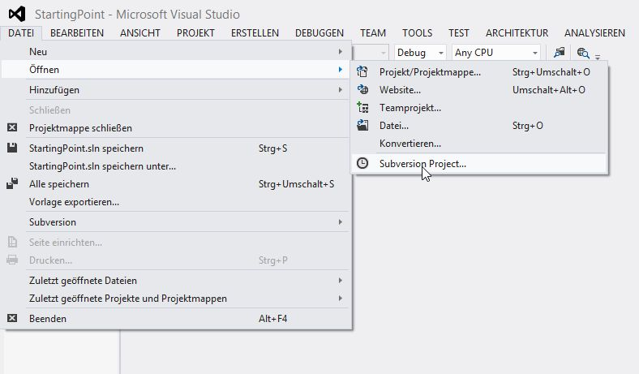 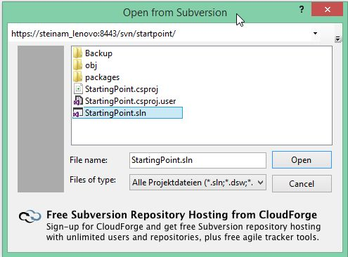 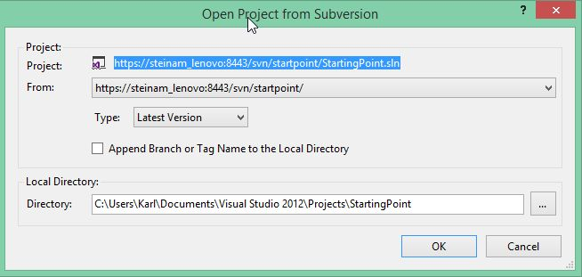Weitere Tools werden zu gegebener Zeit in Visual Studio hinzugefügt.
Das Programm¶
Zu tun
Hier das bestehende Program vorstellen.
Das Beispielprogramm ist sehr einfach gehalten. Das Programm berechnet die Kundengebühren eines fiktiven Kunden in einem Videoladen und druckt diese aus. Es erhält dafür die Filme, die ein Kunde ausgeliehen hat, sowie die Dauer der Ausleihe. Es berechnet dann die Gebühren und identifiziert die Art des Films (normal, Kinder, Neuheit). Zusätzlich berechnet das Programm „Rabattpunkte“, die davon abhängen, ob der Film eine Neuheit ist.
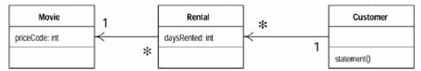//Movie.cs
using System;
namespace Before {
public enum PriceCodes {
Regular, NewRelease, Childrens
}
public class Movie {
private string m_Title;
private PriceCodes m_PriceCode;
public Movie(string title, PriceCodes priceCode) {
m_Title = title;
m_PriceCode = priceCode;
}
public PriceCodes PriceCode {
get {return m_PriceCode;}
set {m_PriceCode = value;}
}
public string Title {
get {return m_Title;}
}
}
}
//Rental.cs
using System;
namespace Fowler {
public class Rental {
private Movie m_Movie;
private int m_DaysRented;
public Rental(Movie movie, int daysRented) {
m_Movie = movie;
m_DaysRented = daysRented;
}
public int DaysRented {
get {return m_DaysRented;}
}
public Movie Movie {
get {return m_Movie;}
}
}
}
//Customer.cs
using System;
using System.Collections;
namespace Fowler {
public class Customer {
private string m_Name;
private ArrayList m_Rentals = new ArrayList();
public Customer(string name) {
m_Name = name;
}
public string Name {
get {return m_Name;}
}
public void AddRental(Rental arg) {
m_Rentals.Add(arg);
}
//public string Statement() { //See the next page }
}
}
Die Statement-Methode in der Klasse Customer führt nun alle Berechnungen durch. Folgendes Sequenzdiagramm zeigt den prinzipiellen Ablauf:
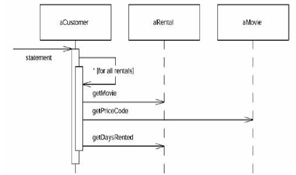 public string Statement() {
double totalAmount = 0;
int frequentRenterPoints = 0;
IEnumerator rentals = m_Rentals.GetEnumerator();
string result = "Rental record for " + m_Name + "\n";
while ( rentals.MoveNext() ) {
double thisAmount = 0;
Rental each = (Rental)rentals.Current;
switch(each.Movie.PriceCode) {
case PriceCodes.Regular:
thisAmount += 2;
if (each.DaysRented > 2) {
thisAmount += (each.DaysRented - 2) * 1.5;
}
break;
case PriceCodes.NewRelease:
thisAmount += each.DaysRented *3;
break;
case PriceCodes.Childrens:
thisAmount += 1.5;
if (each.DaysRented > 3) {
thisAmount = (each.DaysRented - 3) * 1.5;
}
break;
}
frequentRenterPoints++;
if ((each.Movie.PriceCode == PriceCodes.NewRelease)
&& (each.DaysRented > 1)) {
frequentRenterPoints ++;
}
result += "\t" + each.Movie.Title + "\t"
+ thisAmount.ToString() + "\n";
totalAmount += thisAmount;
}
result += "Amount owed is " + totalAmount.ToString() + "\n";
result += "You earned " + frequentRenterPoints.ToString()
+ " frequent renter points.";
return result;
}
Entwickeln unter einer Versionsverwaltung¶
Die Entwicklung mit/ohne Versionsverwaltung unterscheidet sich zunächst nicht wesentlich. Es ist lediglich zu beachten, dass jegliche Änderungen zunächst nur an der lokalen Kopie ausgeührt werden. Ein Änderung im zentralen Versions-Repository muss durch den Entwickler mit Hilfe eines Commits angestoßen werden.
Bei einer Arbeit im Team weiß der einzelne Entwickler nicht, welche teile des Quellcodes zur Zeit von seinen Kollegen bearbeitet wird. Um sein lokales Projekt auf dem aktuellen Stand zu halten, muss er deshalb selbts häüfig Updates aus dem zentralen Repository in seine lokale Kopie einspielen. Hat er in der Zwischenzeit gleiceh Quellode-Teile wie ein anderer Entwickler bearbeitet, führt dies automatisch zu Konflikten im Quellcode, die dann manuell gelößt werden müssen. Diese „Ärgernisse“ führen im Alltag aber eher dazu, dass sich Entwickler genau absprechen, wer welche Codeteile bearbeitet. Es ist damit eher von Vortiel als von Nachteil.
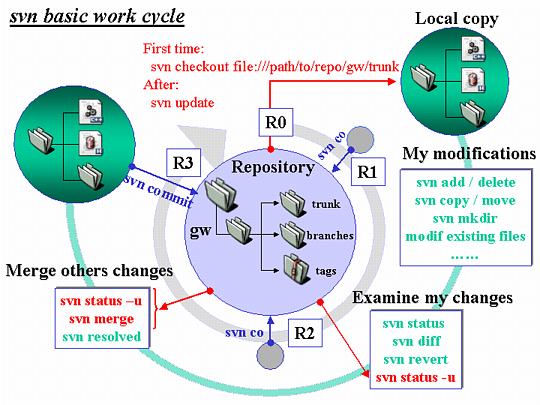In unserem Beispiel wollen wir in den bestehenden Code einige Unit-Tests einbauen.
Erstellen von Unit-Tests¶
Das Test-Framework NUnit kann auf verschiedene Weise installiert werden. Ein für das weitere Fortschreiten des Projektes sinnvolles Vorgehen ist es, mit Hilfe des NuGet-Paketmanagers die notwendigen Dateien automatisch in das VStudio-Projekt zu integrieren. Neben der Installation des NUnit-Frameworks muss dies als Verweis in die Solution mit eingebunden werden. Ein using-Statement erlaubt anschlie0end den Zugriff auf die Funktionalitäten des Test-Frameworks.
Für das Ausführen der Tests ist allerdings dennoch die manuelle Installation des Nunit-Frameworks notwendig.
{kind=link}
Zum Testen der korrekten Funktionalität sollen einige Demo-Objekte von Filmen, Kunden und Ausleihvorgängen erzeugt werden. Anschließend wird in einem ersten Test überprüft, ob die richtigen Daten zurückgeliefert werden.
using System;
using NUnit.Framework;
namespace StartingPoint
{
/// <summary>
/// Unit tests for StartingPoint project.
/// </summary>
[TestFixture]
public class UnitTests
{
/* Fields */
// Movies
Movie m_Cinderella;
Movie m_StarWars;
Movie m_Gladiator;
// Rentals
Rental m_Rental1;
Rental m_Rental2;
Rental m_Rental3;
// Customers
Customer m_MickeyMouse;
Customer m_DonaldDuck;
Customer m_MinnieMouse;
/* Methods */
[SetUp]
public void Init()
{
// Create movies
m_Cinderella = new Movie("Cinderella", PriceCodes.Childrens);
m_StarWars = new Movie("Star Wars", PriceCodes.Regular);
m_Gladiator = new Movie("Gladiator", PriceCodes.NewRelease);
// Create rentals
m_Rental1 = new Rental(m_Cinderella, 5);
m_Rental2 = new Rental(m_StarWars, 5);
m_Rental3 = new Rental(m_Gladiator, 5);
// Create customers
m_MickeyMouse = new Customer("Mickey Mouse");
m_DonaldDuck = new Customer("Donald Duck");
m_MinnieMouse = new Customer("Minnie Mouse");
}
[Test]
public void TestMovie()
{
// Test title property
Assert.AreEqual("Cinderella", m_Cinderella.Title);
Assert.AreEqual("Star Wars", m_StarWars.Title);
Assert.AreEqual("Gladiator", m_Gladiator.Title);
// Test price code
Assert.AreEqual(PriceCodes.Childrens, m_Cinderella.PriceCode);
Assert.AreEqual(PriceCodes.Regular, m_StarWars.PriceCode);
Assert.AreEqual(PriceCodes.NewRelease, m_Gladiator.PriceCode);
}
Der entscheidende Test wird aber das Überprüfen der Statement()-Methode sein.
Bemerkung
Aufgabe
Überlegen Sie, wie man die Statement-Methode testen könnte.
[Test]
public void TestCustomer()
{
// Test Name property
Assert.AreEqual("Mickey Mouse", m_MickeyMouse.Name);
Assert.AreEqual("Donald Duck", m_DonaldDuck.Name);
Assert.AreEqual("Minnie Mouse", m_MinnieMouse.Name);
// Test AddRental() method - set up for test
m_MickeyMouse.AddRental(m_Rental1);
m_MickeyMouse.AddRental(m_Rental2);
m_MickeyMouse.AddRental(m_Rental3);
/* At this point, the structure of the program begins getting in the
* way of testing. Rentals are imbedded in the Customer object, but
* there is no property to access them. They can only be accessed
* internally, by the Statement() method, which imbeds them in the
* text string passed as it's return value. So, to get these amounts,
* we will have to parse that value. */
// Test the Statement() method
string theResult = m_MickeyMouse.Statement();
// Parse the result
char[] delimiters = "\n\t".ToCharArray();
string[] results = theResult.Split(delimiters);
/* The results[] array will have the following elements:
* [0] = junk
* [1] = junk
* [2] = title #1
* [3] = price #1
* [4] = junk
* [5] = title #2
* [6] = price #2
* [7] = junk
* [8] = title #3
* [9] = price #3
* [10] = "Amount owed is x"
* [11] = "You earned x frequent renter points."
* We will test the title and price elements, and the total
* and frequent renter points items. If these tests pass, then
* we know that AddRentals() is adding rentals to a Customer
* object properly, and that the Statement() method is
* generating a statement in the expected format. */
// Test the title and price items
Assert.AreEqual("Cinderella", results[2]);
Assert.AreEqual(3, Convert.ToDouble(results[3]));
Assert.AreEqual("Star Wars", results[5]);
Assert.AreEqual(6.5, Convert.ToDouble(results[6]));
Assert.AreEqual("Gladiator", results[8]);
Assert.AreEqual(15, Convert.ToDouble(results[9]));
}
Ausführen der Tests¶
In unserem Beispiel wurden die Tests innerhalb des Projektes definiert. In größeren Projekten würde ein eigenes Testprojekt definiert werden, welches das zu testende Projekt referenziert. Mit der Installation des NUnit-Frameworks wird ein Testprogramm mitgeliefert; es befindet sich im bin-Verzeichnis. Nach dem erfolgreichen Compilieren des Quellcodes und dem Aufruf von nunit erscheint folgende grafische Oberfläche.
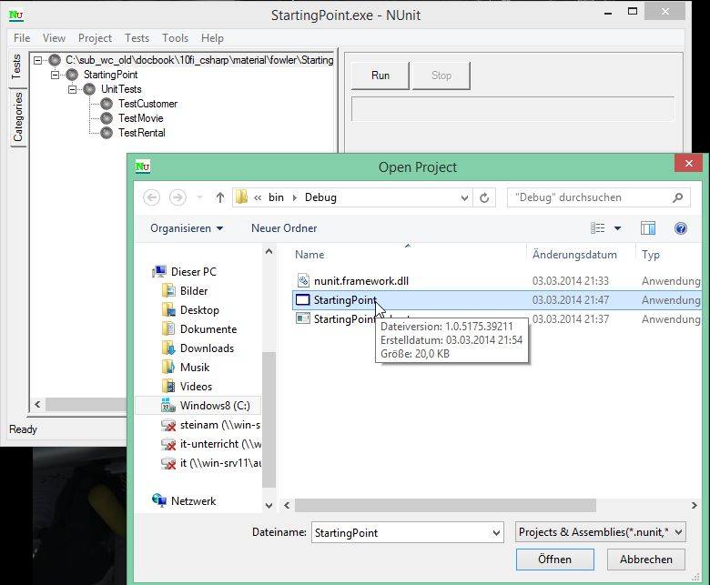Bei erfolgreichen Tests färbt sich der Balken grün.
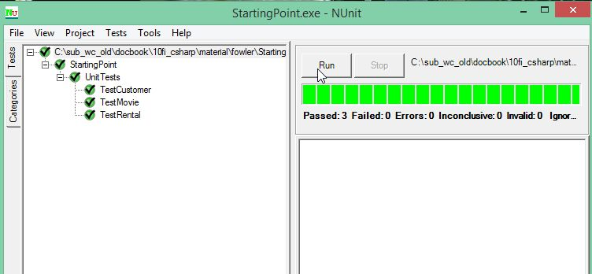Commit der Änderungen¶
Fügen Sie die Änderungen des Quellcodes auch in das zentrale Repository hinzu, indem sie im Projektexplorer von VStudio CommitChanges anklicken.
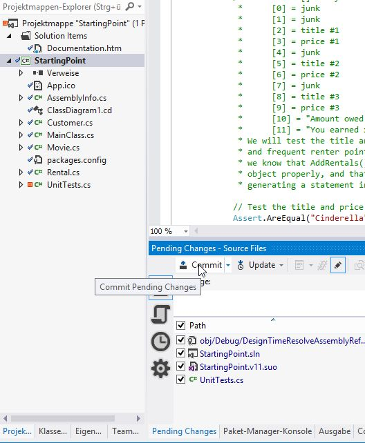Der SVN-Client analysiert die Änderungen und trägt sie im zentralen Repository ein.
Runde 2¶
Automatische Builds¶
Bisher erfolgt ein neuer Build des Programms durch Drücken der Taste F5 innerhalb von VisualStudio auf dem Entwicklerrechner. Dies ist allerdings kein definiertes Vorgehen, da in Abhängigkeit von Betriebssystem, .NET-Plattform und Versionsständen von Fremd-Libraries unterschiedliche Rahmenbedingungen herrschen können.
Alle Aufgaben, die für einen erfolgreichen Buildvorgang vorzunehmen sind, sind am besten in Skripten zu zentralisieren. Für diese Aufgabe wurden bereits vor mehreren Jahrzehnten eigene Programme entwickelt. Wichtige Vertreter sind ANT, NANT, Maven, …. Microsoft verfügte lange Jahre über eine proprietäre Build-Engine, bis Sie sich vor vielen Jahen entschloss, mit Hilfe von MSBUILD einen von VisualStudio getrennten Build-Mechanismus zu entwickeln, der auch für Aufgaben außerhalb von VisualStudio verwendet werden kann.
In unserem Beispiel werden wir aufgrund vorhandener Kennnisstände das Tool NANT benutzen, auch wenn sich natürich für ein VisualStudio-Projekt msbuild besser eignen würde. Intern übergibt VisualStudio seine Build-Aufgaben an msbuild.
NANT¶
NANT ist ein OpenSource.Projekt und lehnt sich in seiner Arbeitsweise an das aus der Java-Welt bekannte ANT an.
Gesteuert wird NANT mit Hilfe eines Konfigurationsfiles default.build, in dem alle Aufgaben definiert werden, die NANT ausführen soll. Die Aufgaben (task) werden dabei mit Hilfe von targets organisiert.
<?xml version="1.0" encoding="utf-8" ?>
<project name="Startingpoint">
<target name="build">
<exec program="msbuild.exe"
basedir="c:\Windows\Microsoft.NET\Framework64\v4.0.30319\"
commandline="Pfad zur Solution\startingpoint.sln"/>
</target>
</project>
Der Aufruf von nant build führt dann zum Ausführen des Buildvorganges.
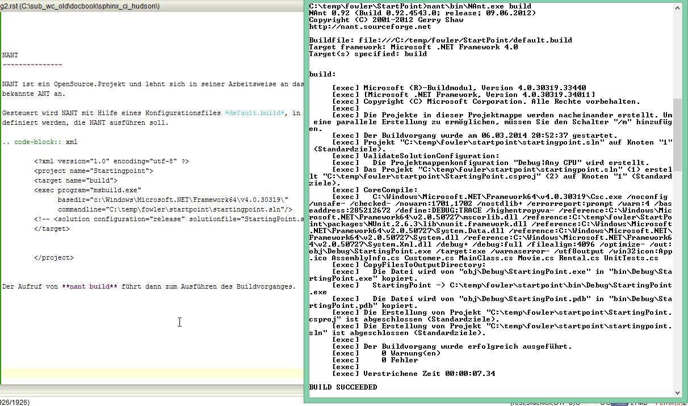MSBUILD¶
Die Arbeit mit msbuild gestaltet sich noch einfacher. Der Buildprozess kann dadurch gestartet werden, dass man dem Konsolenprogramm msbuild.exe den Pfad zur Solution übergibt.
c:\Windows\Microsoft.NET\Framework64\v4.0.30319\msbuild.exe Pfad_zur_Solution.sln
NUnit-Integration¶
Grundsätzlich kann NUnit sowohl in NANT als auch in MSBUILD integriert werden. In unserem Beispiel werden wir die Integration mit Hilfe des NANT-Tools zeigen.
Eine Konfigurationsdatei von NANT kann verschiedene Tasks besitzen, die auch selbständig voneinander ausgerufen werden können.
<?xml version="1.0" encoding="utf-8" ?>
<project name="Startingpoint">
<target name="build">
<exec program="msbuild.exe"
basedir="c:\Windows\Microsoft.NET\Framework64\v4.0.30319\"
commandline="C:\temp\fowler\startpoint\startingpoint.sln"/>
</target>
<target name="test">
<exec program="c:\Program Files (x86)\NUnit 2.6.3\bin\nunit-console.exe"
commandline="C:\temp\fowler\startpoint\bin\Debug\StartingPoint.exe /xml=C:\temp\fowler\startpoint\bin\Debug\result_test.xml" />
</target>
</project>
Der Parameter /xml gibt den Dateinamen an, in der NUnit seine Ausgaben schreiben soll. Diese Datei wird von uns später noch ausgewertet werden. Der Aufruf des Test-Targets erfolgt dann wie folgt.
Microsoft Windows [Version 6.3.9600]
(c) 2013 Microsoft Corporation. Alle Rechte vorbehalten.
C:\temp\fowler\StartPoint>c:\temp\nant\bin\NAnt.exe test
NAnt 0.92 (Build 0.92.4543.0; release; 09.06.2012)
Copyright (C) 2001-2012 Gerry Shaw
http://nant.sourceforge.net
Buildfile: file:///C:/temp/fowler/StartPoint/default.build
Target framework: Microsoft .NET Framework 4.0
Target(s) specified: test
test:
[exec] NUnit-Console version 2.6.3.13283
[exec] Copyright (C) 2002-2012 Charlie Poole.
[exec] Copyright (C) 2002-2004 James W. Newkirk, Michael C. Two, Alexei A. Vorontsov.
[exec] Copyright (C) 2000-2002 Philip Craig.
[exec] All Rights Reserved.
[exec]
[exec] Runtime Environment -
[exec] OS Version: Microsoft Windows NT 6.2.9200.0
[exec] CLR Version: 2.0.50727.8000 ( Net 3.5 )
[exec]
[exec] ProcessModel: Default DomainUsage: Single
[exec] Execution Runtime: net-3.5
[exec] ...
[exec] Tests run: 3, Errors: 0, Failures: 0, Inconclusive: 0, Time: 0,21134 9783145239 seconds
[exec] Not run: 0, Invalid: 0, Ignored: 0, Skipped: 0
[exec]
BUILD SUCCEEDED
Total time: 3.2 seconds.
Metrics-Integration¶
Was soll das ?¶
Berechtigterweise muss man sich fragen, warum man all diesen Aufwand treibt, wenn man doch all diese Dinge auch über VisualStudio hätte erreichen können. Die Antwort liegt in Tatsache, dass man heutzutage als Entwickler kein Einzelkämpfer ist. Der Build und die darum liegenden Tätigkeiten müssen zentralisiert und automatisiert werden. Es ist Zeit für den CI Server.
Runde 3¶
CI Server Jenkins¶
Jenkins (http://jenkins-ci.org) ist ein Fork des CI-Servers Hudson. Es gibt ihn für verschiedene Betriebssysteme, darunter auch Windows. Das msi-Paket sollte man als Administrator installieren; ein Installationspfad außerhalb von Program Files hat sich zumindest auf meinem Windows 8 - System als nützlich erwiesen.
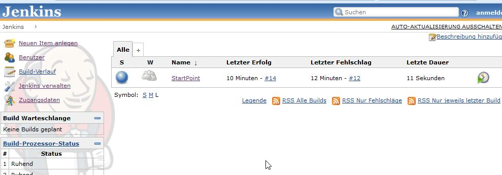Jenkins ist über Plugins flexibel konfigurierbar; in unserem Falle werden wir folgende Plugins installieren:
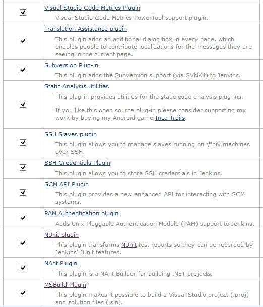- NUnit: Zum Rendern der NUnit-Ausgabe
- MSBUILD: Zum Builden von Solution-Files
- NANT: Zum Anstoßen weiterer Funktionalitäten
- VStudio Code Metrics: Zum Erzeugen einfacher Metriken per metrics.exe
Diese Plugins müssen global installiert und konfiguriert werden.
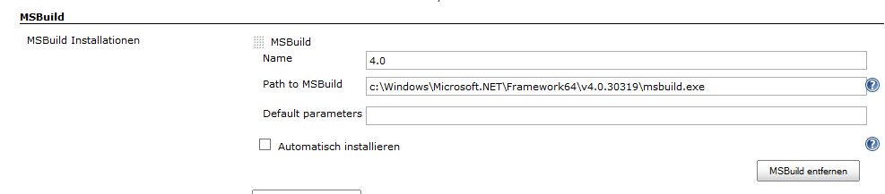 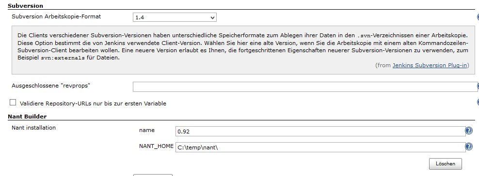 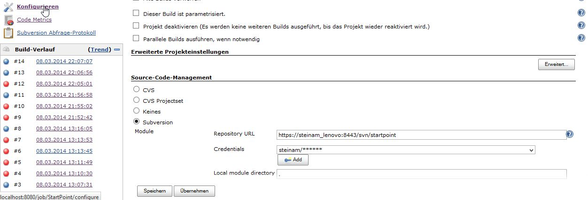Weitere Konfigurationen werden dann innerhalb eines Projekte vorgenommen.
Weiterhin müssen noch Benutzer mit entsprechenden Zugriffsberechtigungen auf jeweilige Projekte angelegt werden.
Jobs anlegen¶
Das Anlegen eines Projektes erfolgt in Jenkins unter Neues Item anlegen
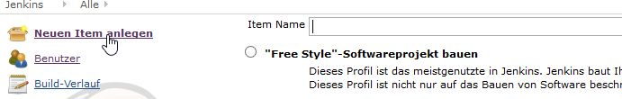 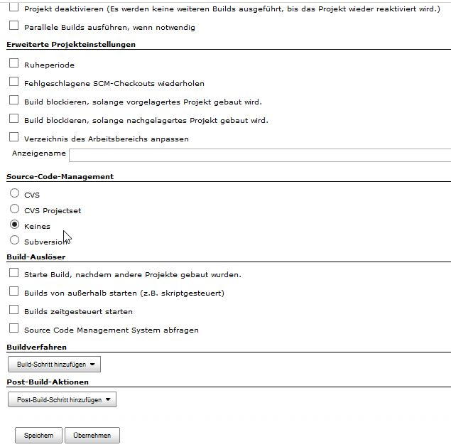Jobs Konfigurieren¶
In unserem beispiel sollen die bisher lokal ausgeführten Bild-Schritte nun durch Jenkins realisiert werden. Dazu sind die Schritte Buildverfahren sowie Post-Build-Aktion zu konfigurieren.
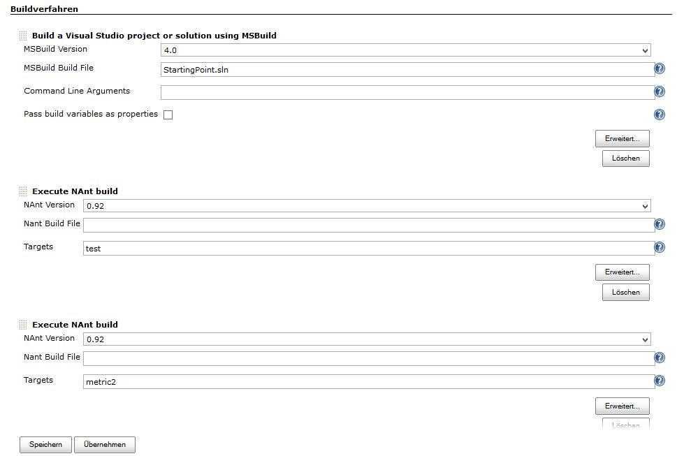Buildverfahren definieren dabei die Aktionen, die ausgeführt werden müssen. Post-Build-Aktionen definieren dabei, was mit den Ergebnissen der Build-Verfahren geschehen soll. In unserem Beispiel werden die Ergebnisse der NANT und Metrics-Ausgaben (XMl-Dateien) über einen „Publisher“ grafisch aufbereitet und in die Übersichtsseite des jeweiligen Buildvorgangs dann integriert. Voraussetzung dafür war natürlich das Installieren der jeweiligen Publisher-Plugins in Jenkins zuvor.
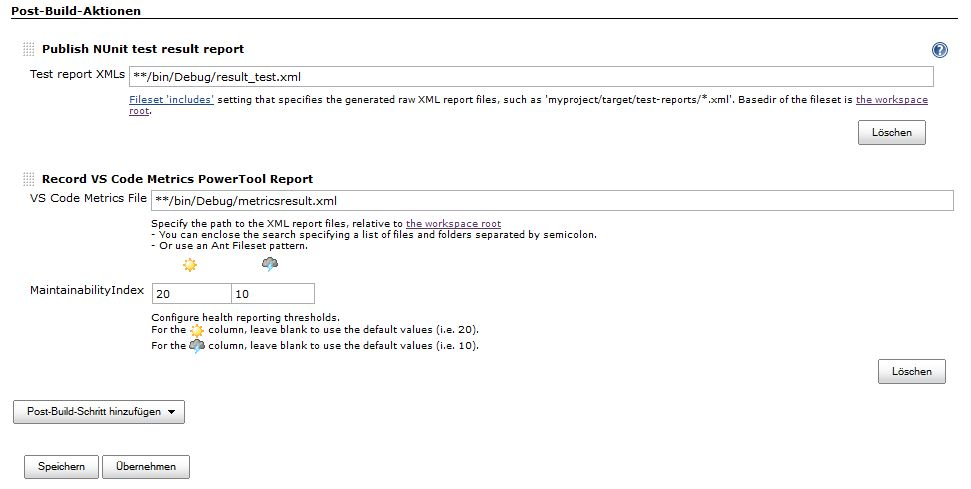Falls alles klappt, sieht anschließend die Startseite eines Projektes wie folgt aus.
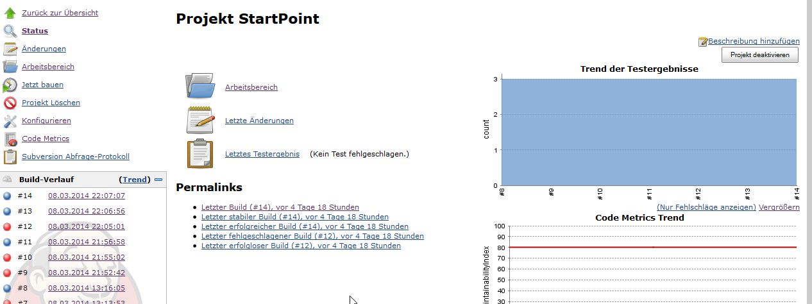Nach dem Klicken auf einen jeweiligen Buildvorgang werden Details dargestellt.
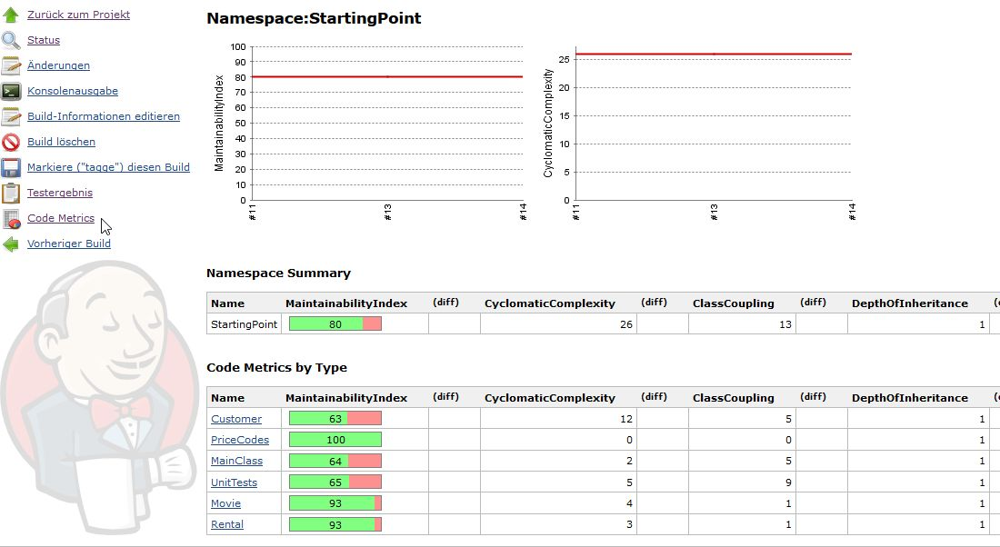 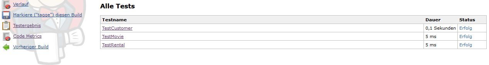Aufgaben:¶
Erstellen API-Dokumentation
Das Programm doxygen (http://www.doxygen.org) erstellt aus dem Quellcode eines Programms eine API-Dokumentation. Der Ablauf der lokalen Erstellung ist wie folgt:
Definieren eines Konfigurationsfiles mit Hilfe eines GUI-Tools (doxywizard)
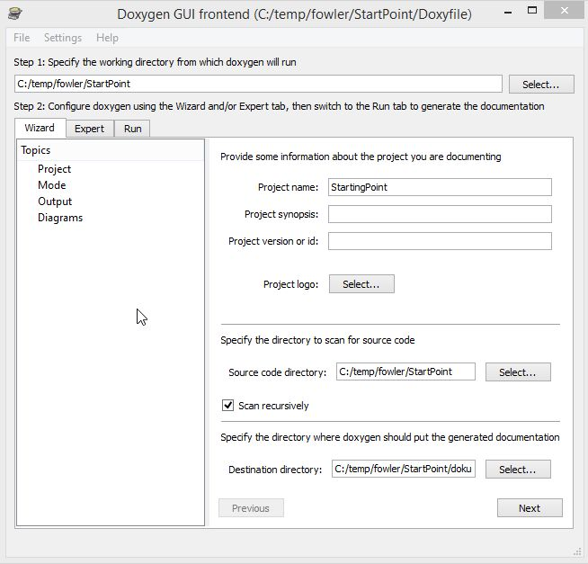Erstellen eines API-Dokumentation durch Aufruf von
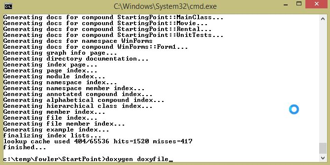
Erstellen Installer Innosetup
Ähnlich wie bei Doxygen kann man mit Hilfe des Programms Innnosetup einen Installer erstellen lassen. Der Ablauf ist prinzipiell der gleich wie bei doxygen.
Mit Hilfe eines Wizards wird ein Konfigurationsfile erstellt, welches dann über ein Konsolenprogramm aufgerufen wird. Dieser Aufruf muss dann in gleicher Weise auf dem CI Server abgebildet werden.
Das Konsolenprogramm für den Aufruf des installers heißt iscc.exe. Dies erwartet als Kommandozeilenparameter die Übergabe eines Konfigurationsfiles.
Die Vorgehensweise auf der CI-Server-Seite ist die gleiche wie beim Erstellen der Doku.
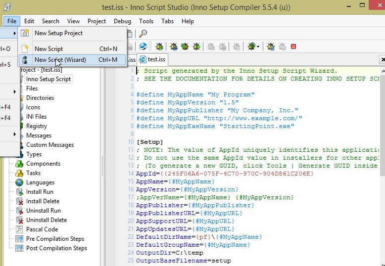 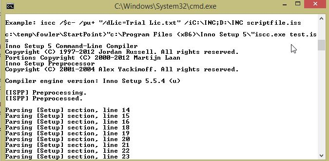 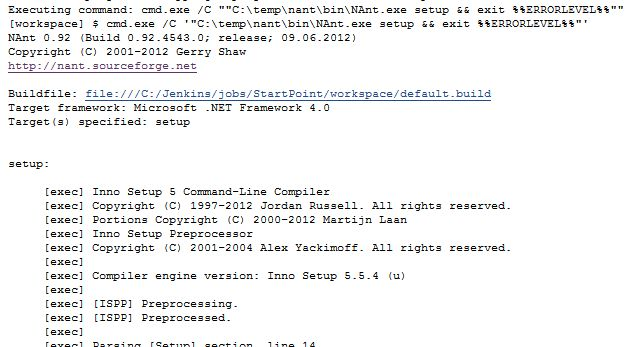Aufgabe
Erstellen sie eine lokal ablauffähige Lösung.
Passen Sie dann die entsprechende Konfiguration an und implementieren Sie diese auf dem CI Server Jenkins. Innosetup (iscc.exe) ist auf dem CI Server installiert.
Zum Ablauf der Erstellung muss natürlich ein neues Target innerhalb des NANT-Buildfiles erstellt werden.
Darstellen von Artefakten
Häufig haben Build-Prozesse auch Ergebnisse in Dateiform. Bei einem Installer wird z.B. am Ende eine Datei setup.exe erzeugt, die man gerne innerhalb des Ci-Servers dann anzeigen würde.
Jenkis kennt für diese Aufgabe die sog. Artefact-Plugins, die solche Dateien dann in der Projektoberfläche anklickbar machen. In unserem Falle wurde das Artifact Deployer Plugin verwendet, um die Datei setup.exe zu verlinken.
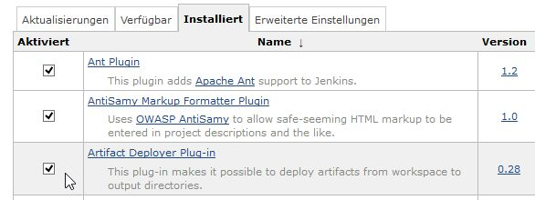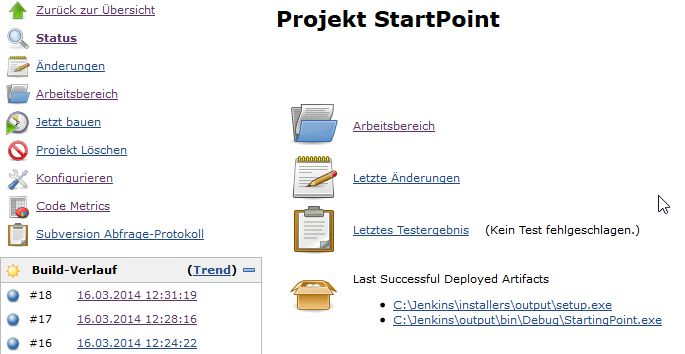Aufgabe
Bilden sie die Ausgabe der Datei setup.exe mit Hilfe des Plugins ab.
Runde 4¶
Refactoring¶
Zitat
Refactoring (auch Refaktorierung oder Restrukturierung) bezeichnet in der Software-Entwicklung die manuelle oder automatisierte Strukturverbesserung von Quelltexten unter Beibehaltung des beobachtbaren Programmverhaltens. Dabei sollen die Lesbarkeit, Verständlichkeit, Wartbarkeit und Erweiterbarkeit verbessert werden, mit dem Ziel, den jeweiligen Aufwand für Fehleranalyse und funktionale Erweiterungen deutlich zu senken.
Refactoring ist ein zentraler Bestandteil der Agilen Softwareentwicklung. Dort wird meist von „kontinuierlichem“ Refactoring [1] oder „kompromisslosem“ Refactoring [2] gesprochen. Refactoring ist in der agilen Softwareentwicklung wie Kodieren oder Modultesten ein integraler Bestandteil des Softwareentwicklungsprozesses und nicht auf bestimmte Zeiten bzw. Phasen beschränkt.
Refactoring wird hauptsächlich auf unschöne Stellen im Code (siehe Code-Smell) angewandt. Diese sind z.B. mit Hilfe von schlechten Metrikwerten als solche zu erkennen. Dabei wird der Quelltext eines Computerprogramms umgestaltet, wobei die tatsächliche Programmfunktion unverändert bleiben soll. Die Umgestaltung des Quelltextes erfolgt meist nach folgenden Gesichtspunkten:
- Lesbarkeit
- Übersichtlichkeit
- Verständlichkeit
- Erweiterbarkeit
- Vermeidung von Redundanz
- Testbarkeit
Folgendes sind besonders häufig eingesetzte Refactorings:
- Änderung eines Symbolnamens.
- Verschieben eines Symbols in ein anderes Modul, z. B. eine Methode in eine andere Klasse.
- Aufteilung eines Moduls (z. B. Paket, Klasse, Methode) in mehrere kleinere Module oder Zusammenlegung kleinerer Module zu einem größeren.
- Im weitesten Sinne auch die Umformatierung eines Quelltextes, z. B. mit einem Beautifier.
- Bei geänderten Geschäftsprozessen bei Darstellung mittels der Unified Modeling Language UML kann mittels „Refactoring“ der Programmcode geändert werden. Dadurch wird eine robuste und stabile Systemarchitektur geschaffen, da unübersichtliche Änderungen nicht im Code initiiert werden müssen.
Im weiteren Verlauf wollen wir nun den Quelltext hinsichtlich eines möglichen Refactorings untersuchen.
Aufteilen umfangreicher Methoden¶
Ausgangspunkt unserer Überlegungen ist, dass die Statement-Methode der Klasse Customer um eine html-Ausgabe erweitert werden soll. Das notwendige Verändern der Methode kann deshalb mit weiteren Optimierungen verbunden werden.
Methoden herausnehmen¶
Eine Reduzierung der Komplexität einer Methode besteht häufig daran, logische Teile innerhalb einer Methode zu finden, diese auszulagern und damit die Komplexität der Methode zu verringern.
Aufgabe
Welche Teile des Statement-Methode würden sich dazu anbieten ?
{kind=link}
{kind=link}
{kind=link}
In unserem Beispiel wurde die switch-Anweisung in eine eigene Methode ausgelagert. Wenn korrekte Datentypen bei der Übergabe von Parametern definiert werden, darf diese Codeänderung anschließend keine negativen Auswirkungen auf diese Tests haben.
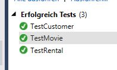Die Codemetriken für diese Methode ändern sich ebenfalls in die positive Richtung.
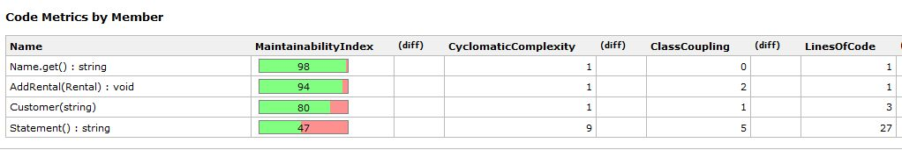 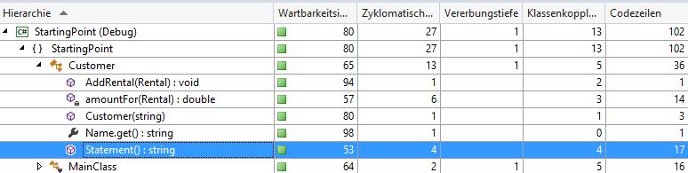Umbenennen¶
Nachdem die Tests keine Fehler liefern, kann die neue Version noch zum Umbenennen von einigen Variablen genommen werden. Moderne IDE’s unterstützen den Entwickler dabei weitgehend und verständliche Namen erhöhen die Nachvollziehbarkeit des Quellcodes.
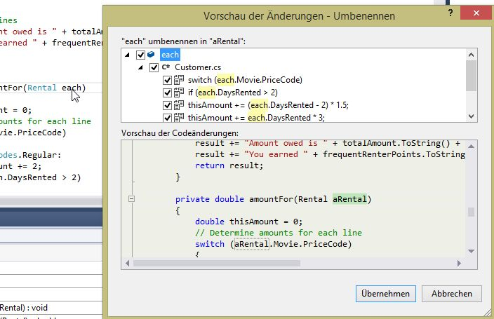Ein Neukompilieren sowie das Ausführen der Tests bestätigt, dass es keine Fehler gegeben hat.
Methoden verschieben¶
Beim Betrachten der eben erstellten Methode amountFor() fällt auf, dass diese Informationen aus der Rental-Klasse benutzt, aber eigentlich überhaupt keine Informationen aus der Customer-Klasse. Es fehlt damit die Kohäsion zwischen Methode und Instanzattributen und ein entsprechendes Metrik-Tool würde hier sicherlich einen schlechten LCOM-Metrik errechnen.
Die Methode wäre deshalb besser in der rental-Klasse aufgehoben. man kopiert deshalb zunächst die Methode in die entsprechende Klasse und passt Sie anschließend wie folgt an.
public double GetCharge()
{
double result = 0;
// Determine amounts for each line
switch (m_Movie.PriceCode)
{
case PriceCodes.Regular:
result += 2;
if (DaysRented > 2)
{
result += (DaysRented - 2) * 1.5;
}
break;
case PriceCodes.NewRelease:
result += DaysRented * 3;
break;
case PriceCodes.Childrens:
result += 1.5;
if (DaysRented > 3)
{
result += (DaysRented - 3) * 1.5;
}
break;
}
return result;
}
In der Klasse Customer ist der Quellcode der amountFor-Methode durch folgende Vereinfachung anzupassen.
private double amountFor(Rental aRental)
{
return aRental.GetCharge();
}
Falls es immer noch fehlerfrei läuft, kann die amountFor-Methode vernachlässigt werden. Die Umleitung auf die Rental-Klasse kann wieder direkt in der Statement()-Methode erfolgen.
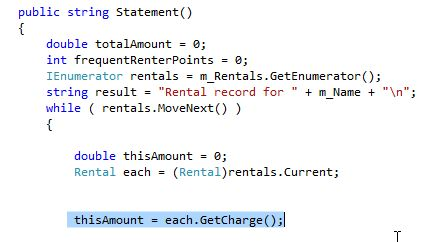Die vorhandenen UnitTests sollten noch immer funktionieren und auch die CodeMetrik sollte keine signifikanten Änderungen erfahren haben.
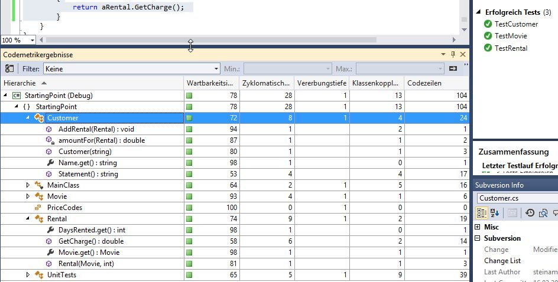Das abschließende Klassendiagramm hat sich vom Ausgangspunkt wie folgt geändert.
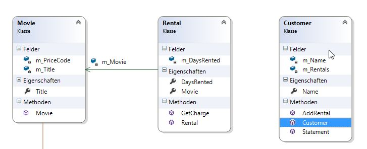UnitTests
Durch die neue öffentliche Methode in Rental müssten für getcharge() neue UnitTests geschrieben werden. Sie können diese unter UnitTest3.cs in ihr Projekt integrieren.
Eliminiere Temp-Variablen¶
Temporäre Variablen sind ein weiteres Indiz für Optimierungen. Sie überleben häufig im Produktivcode und nach einiger Zeit ist man sich deren Notwendigkeit unsicher.
In unserem beispiel kann die Deklaration und Benutzung von thisAmount in der while-Schleife durch each.getCharge() ersetzt werden.
while ( rentals.MoveNext() )
{
Rental each = (Rental)rentals.Current;
// Determine amounts for each line
// Add frequent renter points
frequentRenterPoints++;
// Add bonus for a two-day new-release rental
if ((each.Movie.PriceCode == PriceCodes.NewRelease) && (each.DaysRented > 1))
{
frequentRenterPoints ++;
}
// Show figures for this rental
result += "\t" + each.Movie.Title + "\t" + each.GetCharge().ToString() + "\n";
totalAmount += each.GetCharge();
}
Die Optimierung hinsichtlich der Lesbarkeit wird in diesem Beispiel natürlich durch eine doppelte Berechnung hinterfragbar. Dieser Nachteil wäre aber durch eine Änderung in der Klasse Rental ausgleichbar. Darauf wird später noch eingegangen
Auslagern von Methoden¶
Auch die Rabattpunkte sind ein Kandidat für das Auslagern in eine andere Methode.
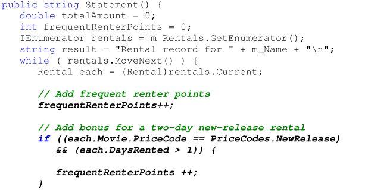Bei der Implementierung der Methode ist zu beachten, dass die frequentrenterPoints-Variable evtl. zweimal erhöht wird. Dies ist in der Methode entsprechend zu implementieren.
class Customer
{
//....
while ( rentals.MoveNext() ) {
Rental each = (Rental)rentals.Current;
frequentRenterPoints += each.GetFrequentRenterPoints();
// Show figures for this rental
class Rental
{
....
public int GetFrequentRenterPoints() {
if (Movie.PriceCode == PriceCodes.NewRelease && DaysRented > 1)
return 2;
else
return 1;
}
Weitere Tests sichern die Funktionalität der ausgelagerten Methode.
[Test]
public void TestNewPublicMethod_RentalGetFrequentRenterPointsNewReleasePrice() {
Rental _RentalSuperman1 = new Rental(new Movie("Superman", PriceCodes.NewRelease),1);
Assert.AreEqual(1, _RentalSuperman1.GetFrequentRenterPoints());
Rental _RentalSuperman3 = new Rental(new Movie("Superman", PriceCodes.NewRelease),3);
Assert.AreEqual(2, _RentalSuperman3.GetFrequentRenterPoints());
}
[Test]
public void TestNewPublicMethod_RentalGetFrequentRenterPointsChildrensPrice() {
Rental _RentalSuperman1 = new Rental(new Movie("Superman", PriceCodes.Childrens),1);
Assert.AreEqual(1, _RentalSuperman1.GetFrequentRenterPoints());
Rental _RentalSuperman3 = new Rental(new Movie("Superman", PriceCodes.Childrens),3);
Assert.AreEqual(1, _RentalSuperman3.GetFrequentRenterPoints());
}
[Test]
public void TestNewPublicMethod_RentalGetFrequentRenterPointsRegularPrice() {
Rental _RentalSuperman1 = new Rental(new Movie("Superman", PriceCodes.Regular),1);
Assert.AreEqual(1, _RentalSuperman1.GetFrequentRenterPoints());
Rental _RentalSuperman3 = new Rental(new Movie("Superman", PriceCodes.Regular),3);
Assert.AreEqual(1, _RentalSuperman3.GetFrequentRenterPoints());
}
Das Klassendiagramm ändert sich entsprechend.

Die Metriken für das Projekt haben anschließend folgende Werte:
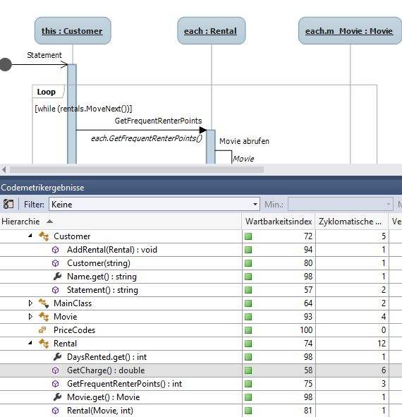Code-Verbesserungen¶
Innerhalb der Statement-Methode kann eine weitere Verbesserung dadurch erreich werden, dass man die Java-Like „enumerator - while“-Schleife durch ein foreach-Konstrukt ersetzt.
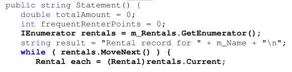 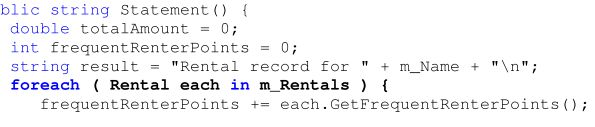Die Statement()-Methode sieht nun wie folgt aus:
public string Statement()
{
double totalAmount = 0;
int frequentRenterPoints = 0;
string result = "Rental record for " + m_Name + "\n";
foreach ( Rental each in m_Rentals )
{
// Determine amounts for each line
// Add frequent renter points
frequentRenterPoints += each.GetFrequentRenterPoints();
// Show figures for this rental
result += "\t" + each.Movie.Title + "\t" + each.GetCharge().ToString() + "\n";
totalAmount += each.GetCharge();
}
// Add footer lines
result += "Amount owed is " + totalAmount.ToString() + "\n";
result += "You earned " + frequentRenterPoints.ToString() + " frequent renter points.";
return result;
}
Temporäre Variablen ersetzen¶
Wie schon weiter oben erwähnt, können temporäre Variablen ein Problem darstellen.
- Sie sind nur nutzbar in der der eigenen Methode
- Keine Wiederverwendbarkeit
In unserem Beispiel bieten sich die Variablen totalAmount sowie frequentRentalPoints zum Refaktorisieren an.
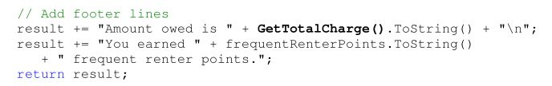Da totalAmount innerhalb einer Schleife errechnet wurde, muss diese Schleifenstruktur innerhalb der Methode getTotalCharge() nachgebildet werden.
private double GetTotalCharge() {
double result = 0;
foreach ( Rental each in m_Rentals ) {
result += each.GetCharge();
}
return result;
}
Die gleiche Vorgehensweise ist für frequentrenterPoints nachzuholen.
Aufgabe
Erstellen Sie eine Methode GetTotalFrequentRenterPoints und führen Sie die Refaktorisierung durch.
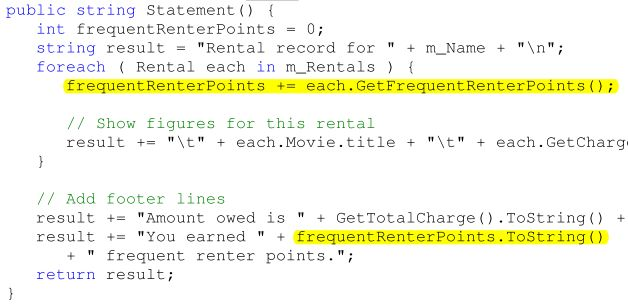Lösung
public string Statement() {
string result = "Rental record for " + m_Name + "\n";
foreach ( Rental each in m_Rentals ) {
// Show figures for this rental
result += "\t" + each.Movie.title + "\t" + each.GetCharge().ToString() + "\n";
}
// Add footer lines
result += "Amount owed is " + GetTotalCharge().ToString() + "\n";
result += "You earned " + GetTotalFrequentRenterPoints().ToString()
+ " frequent renter points.";
return result;
}
private int GetTotalFrequentRenterPoints() {
int result = 0;
foreach ( Rental each in m_Rentals ) {
result += each.GetFrequentRenterPoints();
}
return result;
}
Übersetzen Sie die folgenden Aussagen sinngemäß
It is worth stopping to think a bit about the last refactoring. Most refactorings reduce the amount of code, but this one increases it. That’s because Java 1.1 requires a lot of statements to set up a summing loop. Even a simple summing loop with one line of code per element needs six lines of support around it. It’s an idiom that is obvious to any programmer but is a lot of lines all the same.
The other concern with this refactoring lies in performance. The old code executed the „while“ loop once, the new code executes it three times. A while loop that takes a long time might impair performance. Many programmers would not do this refactoring simply for this reason. But note the words if and might. Until I profile I cannot tell how much time is needed for the loop to calculate or whether the loop is called often enough for it to affect the overall performance of the system.
Don’t worry about this while refactoring. When you optimize you will have to worry about it, but you will then be in a much better position to do something about it, and you will have more options to optimize effectively.
These queries are now available for any code written in the customer class. They can easily be added to the interface of the class should other parts of the system need this information. Without queries like these, other methods have to deal with knowing about the rentals and building the loops. In a complex system, that will lead to much more code to write and maintain.
HTML-Statement¶
Nach all den Refaktoriesierungen ist es nun einfach, eine HTML-Statement-Methode zu schreiben, da Sie viele interne Implementierungen wiederverwenden kann.
public string HTMLStatement()
{
string result = "<H1>Rental record for <EM>" + m_Name + "</EM></H1><P>\n";
foreach (Rental each in m_Rentals)
{
result += each.Movie.title + ": " + each.GetCharge().ToString() + "<BR>\n";
}
// Add footer lines
result += "<P>Amount owed is <EM>" + GetTotalCharge().ToString() + "</EM><P>\n";
result += "You earned <EM>" + GetTotalFrequentRenterPoints().ToString()
+ "</EM> frequent renter points.<P>";
return result;
}
Neue Unit-Tests¶
Die HTML-Statement-Methode maht natürlich auch neue Unit-Tests notwendig.
[Test]
public void TestHTMLstatement()
{
Customer _LiverLips = new Customer("Liver Lips");
_LiverLips.AddRental(new Rental(new Movie("Enforcer", PriceCodes.Childrens), 10));
_LiverLips.AddRental(new Rental(new Movie("Apollo 13", PriceCodes.NewRelease), 3));
_LiverLips.AddRental(new Rental(new Movie("Pulp Fiction", PriceCodes.Regular), 4));
Assert.AreEqual("Liver Lips", _LiverLips.Name);
Assert.AreEqual
("<H1>Rental record for <EM>Liver Lips</EM></H1><P>\nEnforcer: 12<BR>\nApollo 13: "
+ "9<BR>\nPulp Fiction: 5<BR>\n<P>Amount owed is <EM>26</EM><P>\n"
+ "You earned <EM>4</EM> frequent renter points.<P>"
, _LiverLips.HTMLStatement());
_LiverLips.AddRental(new Rental(new Movie("The Good, The Bad, And The Ugly"
, PriceCodes.Childrens), 10));
Assert.AreEqual
("<H1>Rental record for <EM>Liver Lips</EM></H1><P>\nEnforcer: 12<BR>\nApollo 13: "
+ "9<BR>\nPulp Fiction: 5<BR>\nThe Good, The Bad, And The Ugly: 12<BR>\n<P>"
+ "Amount owed is <EM>38</EM><P>\nYou earned <EM>5</EM> frequent renter points.<P>"
, _LiverLips.HTMLStatement());
}
Vergleich vorher/nachher¶
Obwohl natürlich auch in anderen Klassen Veränderungen vorgenommen wurden, ist ein Vergleich der Statement()-Methode zu Beginn und zum jetzigen Zeitpunkt interessant.
Man kann in der Versionsverwaltung durch ein Compare von Head und Revision 1 erreichen.
 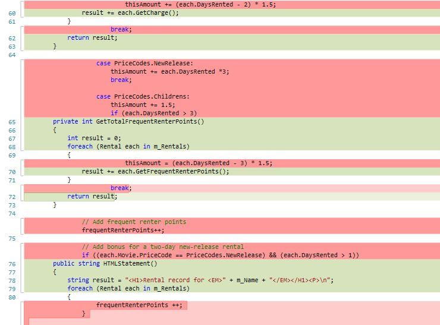
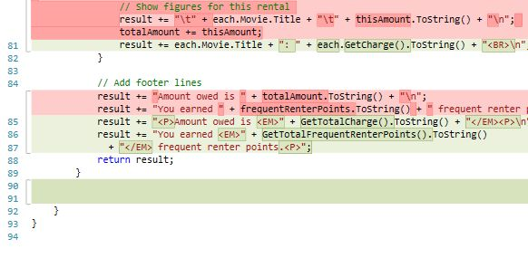
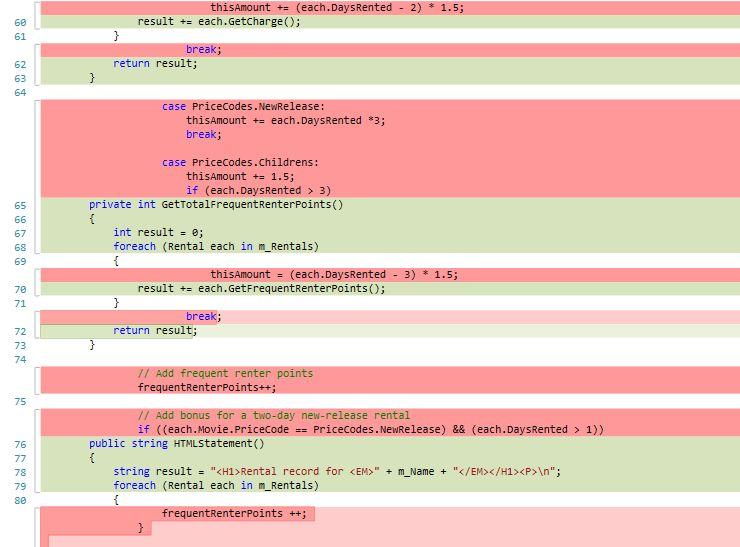
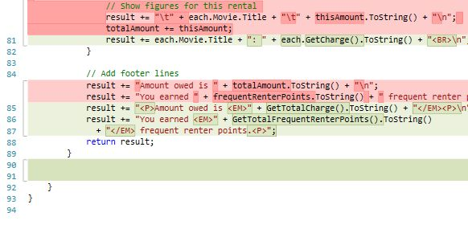